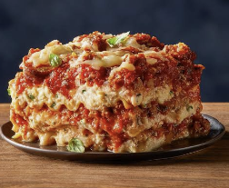

Lasagna recipe

Description
lasagna is well known by garfield readers. It is garfield's prefered
dish for a good reason.Lasagna is tasty, rich in protein and rich in flavor.
Follow me and enjoy this lasagna with me
Ingredients
- Ground beef
- Onion
- garlic
- Tomato
- Sugar
- Spices and Seasonings
- Lasagna noodles
- Cheese
- Egg
Steps
- Boil salted water and cook the lasagna noodles according to the package. Drain and set aside.
- Cook the Italian sausage, ground beef, and diced onion over medium heat for 8–10 minutes.
- Add garlic and cook for 1 minute. Drain the meat.
- Add crushed tomatoes, tomato paste, water, sugar, parsley, basil, fennel, salt, and pepper.
- Bring the sauce to a boil, reduce to a simmer, and cook uncovered for 30 minutes, stirring occasionally.
- Mix the egg, ricotta, remaining parsley, and salt in a bowl.
- Preheat the oven to 375°F (190°C).
- Spread 2 cups of meat sauce in the bottom of a 13×9-inch baking dish.
- Add 3 lasagna noodles.
- Spread ⅓ of the ricotta mixture over the noodles.
- Add 1 cup mozzarella and 2 tablespoons Parmesan.
- Repeat the layers 2 more times.
- Finish with the remaining meat sauce, mozzarella, and Parmesan.
- Cover and bake for 25 minutes.
- Uncover and bake for another 25 minutes.
- Remove from the oven and let rest for 15 minutes.
- Slice and serve.
Home